Sunil Kopparapu and Peter Corke
Automation, CSIRO Manufacturing Science and Technology
PO
Box 883, Kenmore, Qld 4069 Australia.
http://www.cat.csiro.au/automation
Camera calibration is a `classical' problem in computer vision and photogrammetry. Various camera models and schemes have been proposed in literature, for example, [,,,,] to cite a few. The common approach is to introduce into the scene a calibration device which has a number of points whose relative 3D disposition is accurately known. From the corresponding 2D projections the calibration parameters can be derived using least square [], minimization [], or gradient [] techniques. In recent years researchers have shown the feasibility of performing relative calibration between cameras using natural scene points, rather than a special purpose calibration sources [,,].
| 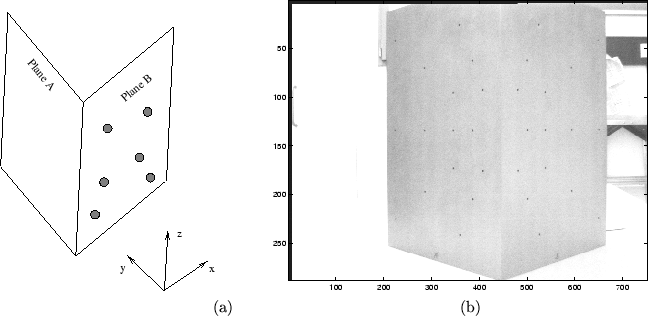 |
In our work we are concerned with the classical single camera problem of estimating both the intrinsic and the extrinsic parameters []. Determining the parameters associated with the camera is a straightforward exercise when the measurements of the 3D points in the scene and the corresponding image points in the 2D image as seen by the camera are accurate. The points in 3D space can be precisely placed -- we use a calibration target (Figure 1) shaped like a wedge on which a number of small calibration marks have been machined. The coordinates of each mark has been measured by a coordinate measuring machine. The problem we investigate in this paper is the effect of small errors in estimating the centroid of the projection of the calibration marks. The point correspondence problem is solved by manually picking the points in the image and then applying some image processing techniques to achieve sub-pixel accuracy. The errors, although small, have a significant effect on the estimated camera parameters.
In this paper, we assume that the camera calibration parameters are determined using an external calibrated reference source for example Figure 1. We then perform a number of numerical experiments (Monte-Carlo simulations) to determine the effect of noise on the camera calibration parameters. This analysis, we think, gives a field engineer an idea of what error in measurements of the points can be tolerated depending on the application, which determines the required accuracy of the mapping between the 3D scene and the 2D image. One can appreciate the significance of such an analysis when one observes that a rotational error of 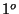 about the optical axis can cause epipolar lines which are vertically aligned on one side of the image to be vertically shifted by more than 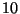 pixels at the other (using our particular camera and lens configuration) and this, for most applications is unacceptable. We also determine analytically the bounds on the camera calibration matrix as a function of the bounds on the errors in measurement. In addition we show that (with reasonable approximation), when the error in measurement is Gaussian so are the elements of camera calibration matrix, though with a different variance. To the best of our knowledge, there has been no study of such an analysis in the literature and the closest work being robust estimation of camera location from noisy data having outliers [] and sensitivity of camera calibration [] and []. In [] while the emphasis is on demonstrating new solutions for estimating the 3D camera location and pose, they do devote a section to sensitivity analysis where they study the effect of incorrect estimation of focal length on pose estimation and the incorrect estimation of the image center on the pose estimation separately. They conclude that (i) incorrect measurement of focal length effects the the translational parameter component parallel to the optical axis and does not have much effect on the other translational and rotation parameters and (ii) incorrect measurement of image center has no significant effect on the translational parameters, however the error in the rotation parameters is linearly related to the error in the estimation of image center. In [] a study of the sensitivity of the camera's intrinsic parameters on the accuracy of the measurement is carried out, in essence they study the error in the real image point and the predicted image point which is obtained by transforming the 3D image point into a 2D plane. Unlike [] we assume that this error is Gaussian and show its effect on different camera calibration parameters and unlike [] we assume that the intrinsic parameters like image center is not know aprior but is determined as a part of the camera calibration process. Infact we show in this paper, the effect of measurement noise on the estimation of the image center also.
The organization of the paper is as follows: in Section 2 we introduce the problem of camera calibration. In Section 3 we derive bounds on the elements of the camera calibration matrix and also show that the camera calibration matrix elements have Gaussian distribution when the measurement errors are Gaussian. In Section 4 we show the effect of noisy camera calibration matrix on the camera calibration parameters, both intrinsic and extrinsic parameters. We use Monte-Carlo simulation methods in Section 5 to show the effect of noise on the camera calibration parameters and compare the experimental results with the developed theory (Section 4) and finally in Section 6 we discuss the results and conclude.
The relationship between the world camera coordinates 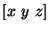 and
the image coordinates
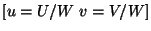 can be written in the homogeneous
coordinate
system as
Using the knowledge of 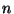 world coordinates of the points (given) and
their their corresponding image coordinates (derived from the image)
one can rewrite (1) as
The most straightforward way of determining the camera
calibration parameters is to precisely position a number of points, namely
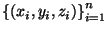, in 3D space. This scene is
imaged using the camera that is to be calibrated and the position of these
corresponding
points in the image, namely,
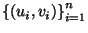 are
measured. Using
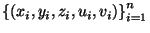
we can determine the lumped camera calibration matrix . The
camera calibration matrix can then be decomposed (see Appendix
A) into parameters
associated with the camera []. The decomposed parameters
can be categorized as intrinsic and extrinsic camera parameters. While
scaling (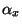 and 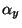) and principal point or image center (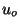, 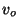)
comprise the intrinsic parameters, the orientation (roll, pitch, yaw) and
the camera translation (in 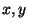 and 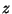 directions) make up the
extrinsic parameters.
We first show how the error in measurement of 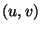 affects the camera
calibration matrix . Initially we derive bounds on the
camera calibration
matrix which depends on the measurement error bounds and later show that the
the distribution of the error in the
camera calibration matrix is Gaussian provided
the error made in measurement has a Gaussian distribution. In the later part
of the paper,
we derive relationships between the camera calibration parameters
(obtained by decomposing
) and the error in the camera calibration matrix  and later compare it experimentally.
and later compare it experimentally.
The camera calibration matrix can be determined by
solving (2) using the least squares estimate provided
there is no error in the measured points
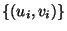. Unfortunately
more
often than not there is error in the measure values of
,
so it is important to first show how the camera calibration matrix is affected by the
error in measurement, to do this we decouple the matrix equation
(2) as
It is found experimentally that the error introduced in measuring the image
positions has a Gaussian distribution (see Figure 5). Now, we show how the
statistics of the
camera calibration matrix () elements
are affected when the error in measurement has a
Gaussian distribution. We know that the error in the camera calibration matrix
 and the error in the measurements
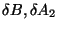 are related
by
and the error in the measurements
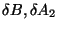 are related
by
Though we have determined the error bounds on the camera calibration matrix elements as affected by the errors made in measuring the image points, we have not shown how the error actually affects the camera calibration parameters (intrinsic and extrinsic). In the next section we show analytically, the effect of the error in the camera calibration matrix on the camera calibration parameters (image center, scale, translation and orientation).
Let
be the error
associated with the camera calibration matrix due to the error in measurements.
We know that the image center, ,
can be estimated from by (6).
Now, if  represents the error component in the camera
calibration matrix then the image center with an erroneous camera
calibration matrix
can be estimated as
represents the error component in the camera
calibration matrix then the image center with an erroneous camera
calibration matrix
can be estimated as
Let
be the error
associated with the camera calibration matrix due to the error in measurements.
We know that the scaling factors,
, can be estimated from from (7).
If
are the errors in the image
center  then the scaling factors
with an erroneous camera
calibration matrix
can be estimated as
then the scaling factors
with an erroneous camera
calibration matrix
can be estimated as
| (18) |
It can be seen from (19), (20)
that the errors in the scaling factors
and
are proportional to the error in the camera calibration
matrix. Since  is Gaussian (5) so
is
and
[] (see Figure 12).
is Gaussian (5) so
is
and
[] (see Figure 12).
The translation parameters in the directions, represented by , can be represented in terms of the camera calibration matrix and
the intrinsic parameters and are given by (8).
If  is the error in the camera calibration matrix then, this
introduces an error in the translation parameters
(see Figure 13).
is the error in the camera calibration matrix then, this
introduces an error in the translation parameters
(see Figure 13).
| (24) |
The roll(), pitch () and vergence () are shown in Figure 2 and are given in (10). Using (10) we can write the roll as

The orientation angle is affected in a more complicated
manner than either of the other parameters (intrinsic and translation).
It is not difficult
to see that the other two orientation parameters,
and , will be related to the error  in a more involved way because
as seen in (9) and are dependent on .
It is not immediately apparent if and
have any particular distribution when
in a more involved way because
as seen in (9) and are dependent on .
It is not immediately apparent if and
have any particular distribution when  is Gaussian.
But, simulation results (Section 5,
Figure 14),
show that the error
in the orientation parameters appear Gaussian when
is Gaussian.
But, simulation results (Section 5,
Figure 14),
show that the error
in the orientation parameters appear Gaussian when  has Gaussian
distribution.
has Gaussian
distribution.
Experiments were conducted to determine the error statistics of the camera calibration parameters due to error in determining the points in the image plane. A calibrated wedge (Figure 1) with precisely marked points was used to estimate the camera calibration parameters. A sample scene as imaged by the Pulnix 6EX camera is shown in Figure 1(b) and the position of the points have been marked manually as shown in Figure 3. Marking these points manually is an error prone process because the points need to be identified with a sub-pixel precision while what we can achieve at best, manually, is an accuracy to a pixel. Figure 4 shows the error in marking the points manually and that obtained by using method of moments to refine feature point centroids to sub-pixel accuracy. The procedure to obtain sub-pixel accuracy is as follows:
The statistics of the error between the manual measurement and that obtained using the method of moments is shown in Figure 5. One can observe that the plot is approximately Gaussian (mean = and standard deviation ).
Before looking at the effect of noise, the points in the image plane were estimated to sub-pixel level accuracy using the method of moments. The camera calibration parameters determined using these values of is given in Table 1. These camera calibration parameters are accurate in the sense that there is no introduced error in the measured image points , thus Table 1 gives the camera calibration parameters when the measurements have no additional noise component.
Next we look at the statistics of the camera parameters when noise with known statistics is introduced into the process of determining the feature point centroids . We use Monte-Carlo simulation methods [] to determine the effect of noise. The experimental procedure is as follows.
Zero-mean Gaussian noise with different variance was added to the measured image points and these values were used to determine the camera calibration parameters. The different variances in the Gaussian noise corresponds to varying noise levels which directly relates to the error made (in pixels) while measuring the calibration points in the image. We have studied the effect of noise which is Gaussian with standard deviation varying from to pixel. Experiments were carried out times for a given noise variance and the statistics of the camera calibration parameters were estimated from these sample runs.
It can be observed from the simulations (Figures 6-9(f)) that both the intrinsic and extrinsic parameters degrade with increasing noise levels. In addition it can be observed that an increase in noise variance increases the variability in the determined camera parameters almost linearly for all the camera calibration parameters. Furthermore an increase in the noise variance introduces a bias in all the parameters, except in roll and pitch orientations (see Figure 8(e)) and translation along the z-axis (see Figure 9(e)). Figure 6(a)-(d) show the image center for all the 2000 runs for various noise levels. It is seen that the cluster of image centers shifts with increasing noise. Figure 6(d) compares the mean squared error of the image center for different noise levels, and Figure 6(e) shows the mean squared error in estimating the image center with varying noise levels. It can be observed that there is a significant shift from the real image center when the noise standard deviation is greater that pixels. This suggests that the image point locations need to necessarily be determined to a sub-pixel accuracy. Figure 6(f) is an indication of the size of the cluster and shows that the variation in the determined image centers increases with increase in noise levels.
Figure 7(a)-(f) captures the effect of noise on the scale
factor. Figure 7(a)-(d) shows the variation of these
parameters along both  and direction for noise standard deviation
of
and direction for noise standard deviation
of
 and pixels. The estimates of the scale factor
degrade with increase in noise level.
It is interesting to
note that the noise affects the scale factors in a similar
direction, namely, if the scale factor along
and pixels. The estimates of the scale factor
degrade with increase in noise level.
It is interesting to
note that the noise affects the scale factors in a similar
direction, namely, if the scale factor along  is less than the mean
value then so is the scale factor in the direction.
is less than the mean
value then so is the scale factor in the direction.
Figures 8(a)-(d), 9(a)-(d)
depict the variation of the orientation and translation parameters as a
function of noise (standard deviation
 and pixels).
These are 3D plots with each direction being denoted by roll, pitch and
vergence (rotations about ,
and pixels).
These are 3D plots with each direction being denoted by roll, pitch and
vergence (rotations about ,  and axis respectively) and and translations
(Figure 9). It can be observed from Figure
8(e) that not all orientation parameters are
affected to the same extent by noise. The vergence angle seems to be less
robust to noise than the roll or the pitch parameters. Observe
that there is a small variation in the orientation parameters at a
noise level of pixels but even this small variation can
significantly alter the image, thus rendering the image useless for some
applications (for example in stereo vision where one is looking for images
satisfying epipolar line constraint). To appreciate this consider an error
of in one of the orientation parameters and if the focal length of
the camera is mm and the size of the pixel is m, then a
error results in a shift of mm (
). This
translates to approximately
pixels across the line which in most stereo vision applications is unacceptable.
and axis respectively) and and translations
(Figure 9). It can be observed from Figure
8(e) that not all orientation parameters are
affected to the same extent by noise. The vergence angle seems to be less
robust to noise than the roll or the pitch parameters. Observe
that there is a small variation in the orientation parameters at a
noise level of pixels but even this small variation can
significantly alter the image, thus rendering the image useless for some
applications (for example in stereo vision where one is looking for images
satisfying epipolar line constraint). To appreciate this consider an error
of in one of the orientation parameters and if the focal length of
the camera is mm and the size of the pixel is m, then a
error results in a shift of mm (
). This
translates to approximately
pixels across the line which in most stereo vision applications is unacceptable.
Figures 11 - 14 show the distribution of the
error in the camera calibration parameters when the error in the camera
calibration matrix is Gaussian (for the purpose of illustration we have
assumed a Gaussian of mean zero and variance , Figure 10).
It can be observed that all the errors in the
camera calibration parameters have a Gaussian like distribution when the
error in
camera calibration matrix ( ) is Gaussian due to error in the
measurement of . Further, these experimental results closely support
the results derived in Section 4. Table 2
captures the appropriateness of the approximations made in Section
4 and related them to the experimental results
(Figures 11 - 14). Note that
because of the way and
) is Gaussian due to error in the
measurement of . Further, these experimental results closely support
the results derived in Section 4. Table 2
captures the appropriateness of the approximations made in Section
4 and related them to the experimental results
(Figures 11 - 14). Note that
because of the way and  are related, the mean and
variance of can not be estimated theoretically unlike other
parameters.
are related, the mean and
variance of can not be estimated theoretically unlike other
parameters.
| ||||||||||||||||||||||||||||||||||||||||||||||||||
The usual procedure to determine the camera calibration parameters is to first determine the camera calibration matrix using the correspondence between the points in 3D space and their projection onto the 2D image plane of the camera and then decompose the camera calibration matrix to determine the camera calibration parameters. In this paper, we follow this procedure to determine the camera calibration parameters and show how the various camera calibration parameters are effected by noisy image measurements. This analysis has practical application especially for a field engineer and can be used to justify the accuracy with which the measurements need to be made so that the camera calibration parameters are within an acceptable error tolerance. As expected the Monte Carlo simulations show that the camera calibration parameters degrade with increase in noise. This fact is reinforced by theory. For example through (16) we have established that the error in the image center is Gaussian and is proportional to the error in the measurement which implies that an increase in error contributes to the increase in the error in estimation the calibration parameters. We observe that the orientation parameters are more complexly involved and hence more prone to noise in measurements than the other parameters (image center, scaling factor and translation). Simulations show that, within the orientation parameters, the degradation is more forgiving in the case of some parameters (pitch, roll) than others (vergence) (Figure 8(e)-(f)).
The camera calibration matrix captures explicitly
| (30) |
| (31) |
We know from the definition of pdf that
| (33) |
| (34) |